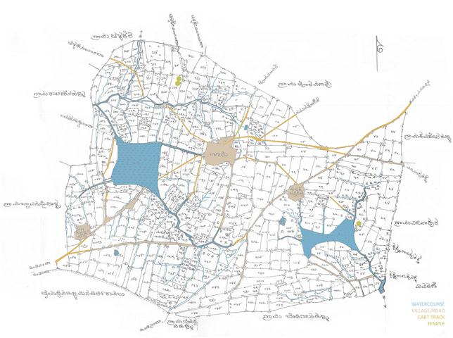

Co-authored with Naresh Narasimhan and Anne Fenk. Published by Urban Design, issue 119, Summer 2011.

Revenue map of the village of Banaswadi, Bangalore. Source: MOD Institute.
Naresh Narasimhan, Anne-Katrin Fenk, and I (then working with MOD Institute) were invited by the Urban Design journal to contribute a piece for the special issue on urban design practice and discourses in India.
Download the essay here: PDF.
Excerpt
The approaches to town planning in India have changed significantly over the past century. Colonial city planning and the post-independence embracing of internationalisation as well as modern and post-modern urban projects have left different urban images in their wake. The transformations of existing city quarters and the expansion of the urban area are rapidly changing contemporary urban spaces in India. At the end of the 1960s, the political focus shifted from the agenda of vibrant construction of new urban centres to an agrarian development approach, while the urban reality was almost taken for granted. Although the urban has returned as a significant location of public intervention in the last two decades, it is now being seen rather as a financial site of investment by public and private partners, and less as an evolving habitat and resource for the future…
Bangalore’s transformation from a city of gardens to a hierarchised cluster of typological fragments is both sinister and alarming. The newly created fabric is simply imposed on top of the old, which shows the failure of large scale planning that addresses only the codex of Megacity infrastructures. Re-inventing the Indian city necessarily requires a shift from this Megacity approach towards inclusive methods of interweaving the existing pattern with the new – the formal with the informal. The argument that informality leads to inability or irrelevance of planning emerges from a problematic understanding of planning as a physical ordering of social activities (the ‘machine paradigm’ according to Bill Hillier). Planning is rather a process of designing spatial networks and lived experiences of such spaces and yantra is a most appropriate visual analytical method for that. Challenging the tabula rasa approach, it is a comprehensive tool for rethinking cities as networks of neighbourhoods within a time-based spatial coexistence. The yantra opens up discourses of standardised and defined urban spaces, and facilitates re-inventing of each unit of habitat as a location of unique identity and productive agency.